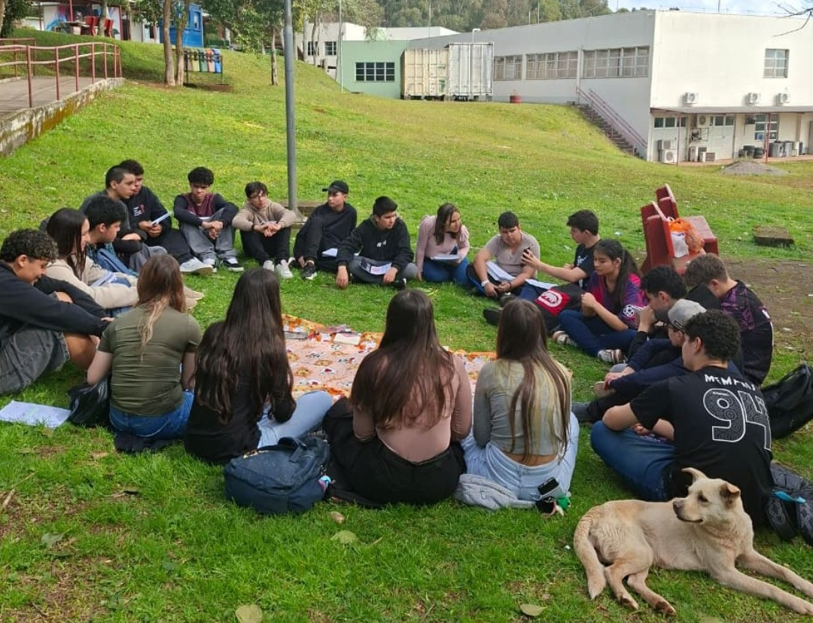
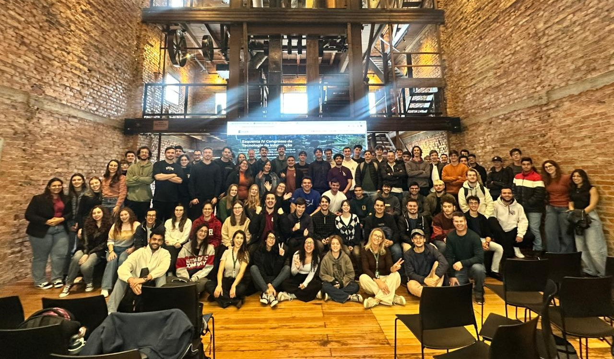
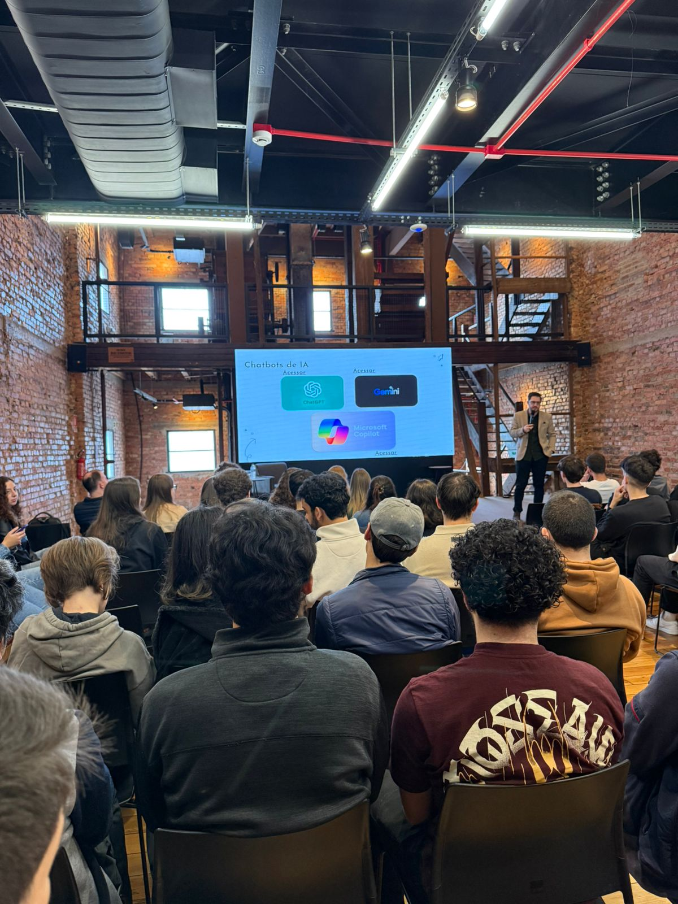
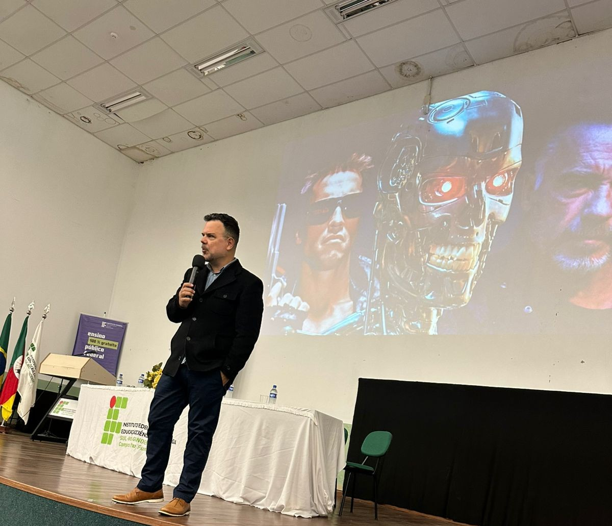

IFSul Câmpus Passo Fundo
Tecnologia da Informação
Conheça os cursos de tecnologia da informação do IFSul câmpus Passo Fundo e prepare-se para o futuro.
Explorar Cursos
Conheça os cursos de tecnologia da informação do IFSul câmpus Passo Fundo e prepare-se para o futuro.
Explorar Cursos
O IFSul Câmpus Passo Fundo oferece infraestrutura completa para formar profissionais de excelência em tecnologia da informação.

O IFSul Câmpus Passo Fundo oferece cursos de Técnico em Manutenção e Suporte em Informática e Bacharelado em Ciência da Computação nos turnos da manhã e noite.
Nossa missão é formar profissionais qualificados, preparados para os desafios do mercado de tecnologia, com infraestrutura moderna e corpo docente especializado.
Oferecemos cursos técnicos e superiores com foco em empregabilidade e excelência profissional.
O curso Técnico em Manutenção e Suporte em Informática do IFSul Campus Passo Fundo foi implantado em 2007, com o objetivo de formar profissionais qualificados para o mercado de trabalho nas áreas de informática. Tem como objetivo do curso é formar Técnicos de Manutenção e Suporte em Informática de nível médio, na modalidade subsequente, com capacidade humanística, crítica, solidária aliadas a capacidade científica e tecnológica.
Um curso para quem deseja criar tecnologia, resolver problemas complexos e atuar na
fronteira da inovação. Com formação ampla em computação — da teoria aos sistemas
avançados — o estudante se torna cientista da computação em apenas 4 anos.
Avaliado pelo MEC com nota máxima (conceito 5), garantindo excelência e
reconhecimento nacional.
Confira a galeria de eventos realizados pelos cursos de tecnologia da informação.

Torneio de jogos realizado no campus IFSul Passo-Fundo

Preparação para o IV Congresso de Tecnologia da Informação.

Palestras ministradas no Hub-Aliança para os alunos do IFSul.

Evento anual que reúne especialistas em tecnologia da informação.